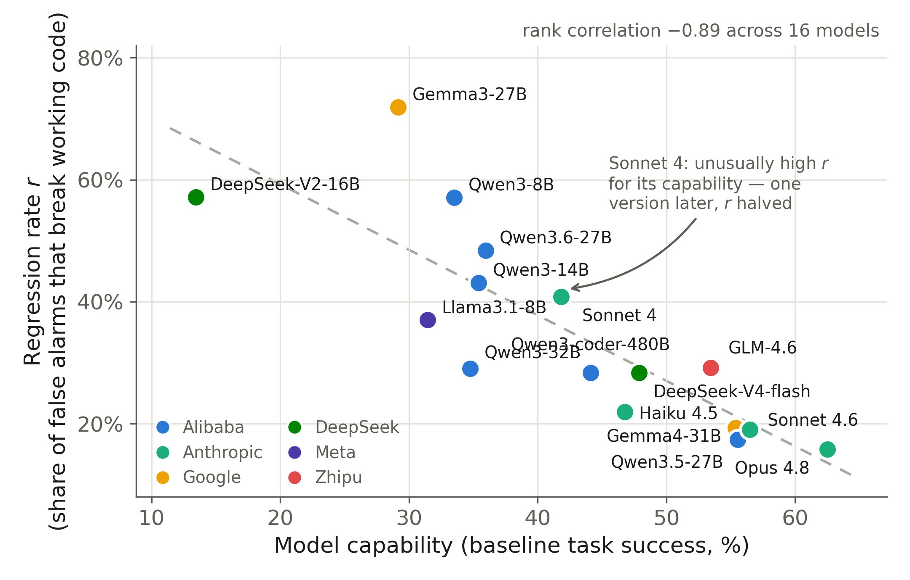

Which LLMs can you trust with unfiltered static-analyzer feedback?
A live trust leaderboard of 16 models, ranked by the counterfactual regression rate r: the probability that the model, handed a false-alarm security finding about its own working code, “fixes” the non-problem and breaks the code. Lower is better — a low-r model recognizes false alarms instead of obeying them.

| # | Model | Developer | r (95% CI) | q | τ* | Best fixed policy | JP@0 | HumanEval | FP/TP trials |
|---|---|---|---|---|---|---|---|---|---|
| 1 | Claude Opus 4.8 | Anthropic | 0.16 [0.09, 0.27] | 0.28 | 0.36 | naive | 62.5% | 99.4% | 57/36 |
| 2 | Qwen3.5-27B | Alibaba | 0.17 [0.09, 0.31] | 0.35 | 0.33 | naive | 55.5% | 96.3% | 46/37 |
| 3 | Claude Sonnet 4.6in-sample | Anthropic | 0.19 [0.16, 0.23] | 0.45 | 0.30 | naive | 56.5% | 98.8% | 420/679 |
| 4 | Gemma4-31Bin-sample | 0.19 [0.15, 0.24] | 0.38 | 0.33 | naive | 55.4% | 100.0% | 321/341 | |
| 5 | Claude Haiku 4.5in-sample | Anthropic | 0.22 [0.18, 0.26] | 0.33 | 0.40 | naive | 46.8% | 96.3% | 460/675 |
| 6 | Qwen3-coder-480B | Alibaba | 0.28 [0.19, 0.41] | 0.43 | 0.40 | naive | 44.1% | 96.3% | 60/95 |
| 7 | DeepSeek-V4-flash | DeepSeek | 0.28 [0.19, 0.40] | 0.62 | 0.31 | naive | 47.9% | 97.0% | 67/103 |
| 8 | Qwen3-32B | Alibaba | 0.29 [0.21, 0.39] | 0.62 | 0.32 | naive | 34.8% | 97.6% | 100/192 |
| 9 | GLM-4.6retired by provider | Zhipu | 0.29 [0.20, 0.41] | 0.53 | 0.36 | naive | 53.4% | — | 72/51 |
| 10 | Llama3.1-8B | Meta | 0.37 [0.22, 0.56] | 0.41 | 0.47 | naive | 31.5% | 59.1% | 27/95 |
| 11 | Claude Sonnet 4in-sample, retired by provider | Anthropic | 0.41 [0.34, 0.48] | 0.23 | 0.64 | selective | 41.8% | — | 196/177 |
| 12 | Qwen3-14B | Alibaba | 0.43 [0.34, 0.52] | 0.57 | 0.43 | naive | 35.4% | 96.3% | 116/212 |
| 13 | Qwen3.6-27B | Alibaba | 0.48 [0.32, 0.65] | 0.50 | 0.49 | naive | 36.0% | 98.8% | 31/42 |
| 14 | Qwen3-8Bin-sample | Alibaba | 0.57 [0.50, 0.64] | 0.45 | 0.56 | selective | 33.5% | 93.9% | 212/397 |
| 15 | DeepSeek-V2-16B | DeepSeek | 0.57 [0.33, 0.79] | 0.35 | 0.62 | selective | 13.4% | 42.1% | 14/57 |
| 16 | Gemma3-27B | 0.72 [0.55, 0.84] | 0.35 | 0.67 | selective | 29.2% | 87.8% | 32/97 |
r — share of false-positive findings whose “fix” broke working code. q — share of true positives actually fixed (secure and tests still pass). τ* = r/(q+r) — feed the model a finding only if the rule’s historical precision exceeds this threshold. Best fixed policy — the better of the two deployed fixed policies, naive (surface everything) vs selective (only rules with >50% precision); “naive” does not mean surfacing everything is optimal — the optimum filters at the model’s own τ*. JP@0 — baseline JointPass (functionally correct and vulnerability-free) on the 51-item core benchmark. Combined Semgrep+Bandit analyzer, multi-seed; in-sample marks the five models used to formulate the r-law, all others measured prospectively.
The headline: r falls steeply with capability (Spearman −0.89) while q stays flat — better models are less gullible — so the right feedback policy is a property of the model and expires with every model update. One frontier model (Claude Fable 5) could not be measured at all: its safety layer refused 9/10 benchmark requests.